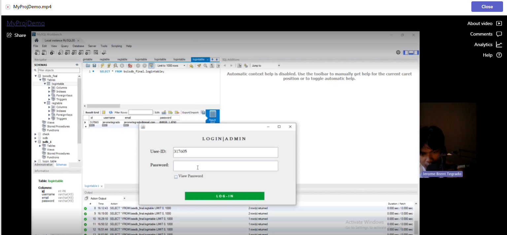

Project 1: Admin Record Program
For our Object-Oriented Programming (OOP) course, I completed a Fullstack Java Admin Record Program as the final project. We used NetBeans as the IDE and designed the front-end with JFrames. Java was utilized to handle the functionality, while MySQL was used as the database for storing and managing records.
| Technologies Used: | NetBeans, Java, MySQL |
|---|---|
| GitHub | View Project |
Project 2: Huffman Coding Program
In our Data Structures and Algorithms course, we were tasked with creating two programs: Compression and Decompression, where we implemented Huffman coding. We used CodeBlocks and C++.

| Technologies Used: | CodeBlocks, C++ |
|---|---|
| GitHub | View Project |
Project 3: ATM Simulation Program
This ATM simulation program was created for the Transaction and Registration projects in our Data Structures and Algorithms course. We simulated a banking environment where a USB functioned as an ATM card. We used CodeBlocks and C++ for development.

| Technologies Used: | CodeBlocks, C++ |
|---|---|
| GitHub | View Project |